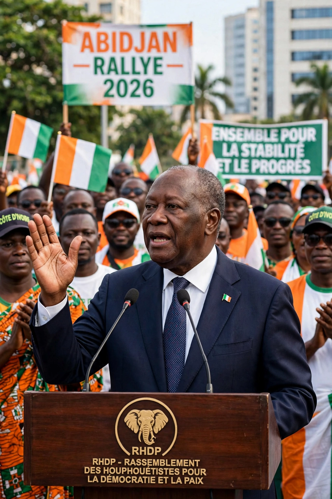

Laurent Gbagbo
| Laurent Gbagbo | |
|---|---|
 Laurent Gbagbo | |
| President of Côte d'Ivoire | 26 October 2000 – 11 April 2011 |
| Born | 31 May 1945, Gagnoa, French West Africa (now Côte d'Ivoire) |
| Political party | Ivorian Popular Front (FPI) |
| Spouse | Simone Gbagbo |
| Profession | Historian, academic |
Laurent Koudou Gbagbo (born 31 May 1945) is an Ivorian politician who served as President of Côte d'Ivoire from 2000 until his arrest in April 2011. A historian by training, he founded the Ivorian Popular Front (FPI) and was for decades the leading opposition figure against the long rule of Félix Houphouët-Boigny and his successor Henri Konan Bédié.
Early life and opposition
Gbagbo was born in Gagnoa in the Bété region of southwestern Côte d'Ivoire. He became a history professor at the University of Abidjan and a trade-union activist; his political activism led to imprisonment in the early 1970s and exile in France in the 1980s, where he founded the FPI in 1982. He returned home in 1988 and stood against Houphouët-Boigny in the 1990 presidential election — the country's first multiparty poll — losing but establishing himself as the main opposition leader and winning a seat in the National Assembly.
Presidency
Gbagbo won the disputed October 2000 election after the military ruler Robert Guéï tried to falsify the results and was driven out by street protests. His term was extended repeatedly after a failed 2002 coup attempt split the country between a rebel-held north and government-held south, plunging it into civil war. A series of peace agreements, culminating in the 2007 Ouagadougou Agreement, led to elections finally held in 2010.
2010–2011 crisis and trial
In the November 2010 runoff, the electoral commission and the United Nations declared Alassane Ouattara the winner, but the Constitutional Council annulled northern votes and proclaimed Gbagbo. Both men claimed the presidency, and the ensuing Second Ivorian Civil War killed about 3,000 people. In April 2011, forces loyal to Ouattara, supported by French and UN troops, arrested Gbagbo in Abidjan. He was transferred to the International Criminal Court — the first former head of state taken into its custody — and tried for crimes against humanity. The ICC acquitted him in January 2019, a verdict upheld on appeal in March 2021, and he returned to Côte d'Ivoire in June 2021.